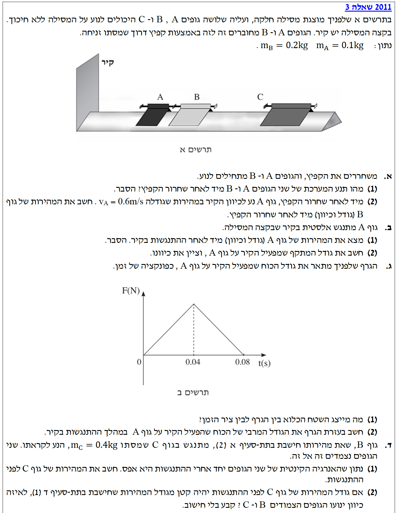

שלום תלמידים יקרים! בשאלה זו אנו מתמודדים עם מערכת של מספר גופים על מסילה חלקה. הכלים המרכזיים שלנו כאן הם חוק שימור התנע ומשפט מתקף-תנע.
חשוב מאוד להקפיד על קביעת כיוון חיובי לציר התנועה ולהישאר עקביים איתו לאורך כל הפתרון. זכרו: כאשר הכוחות הפועלים בציר מסוים הם רק כוחות פנימיים (כמו קפיץ בין שני גופים), התנע הכולל של המערכת באותו ציר נשמר. בואו נתחיל!

[תמונת השאלה המקורית]לא נמצאה תמונה בשם question-image.png באותה תיקייה.
סעיף א': שחרור הקפיץ והתנע הכולל
תרשים כוחות וקביעת צירים:
נקבע ציר \( x \) חיובי ימינה (הפוך מכיוון הקיר שבשמאל). נשרטט תרשים כוחות עבור כל גוף בנפרד במהלך שחרור הקפיץ. הכוח שמפעיל הקפיץ על A הוא שמאלה, ועל B הוא ימינה. אלו "כוחות פנימיים".
כפי שראינו בתרשים, בציר האנכי יש שיווי משקל לכל גוף: \( \Sigma F_y = N - mg = 0 \).
בציר האופקי (\( x \)), הכוחות היחידים שפועלים בזמן שחרור הקפיץ הם כוחות הקפיץ. כוחות אלו הם כוחות פנימיים (כוחות המהווים צמד פעולה ותגובה בין גוף A לגוף B). משמעות הדבר היא ששקול הכוחות החיצוניים הפועלים על המערכת בציר האופקי הוא אפס (\( \Sigma F_{ext} = 0 \)).
על פי עקרונות הדינמיקה, כאשר שקול הכוחות החיצוניים הפועלים על מערכת הוא אפס, מתקיים חוק שימור התנע. כלומר, התנע הכולל של המערכת לא משתנה:
מכיוון ששני הגופים התחילו ממנוחה (היו ללא תנועה), התנע ההתחלתי הכולל היה אפס (\( \Sigma \vec{p}_{initial} = 0 \)). לכן, באופן מיידי וברור, גם התנע הכולל לאחר השחרור חייב להיות אפס.
התנע הכולל של המערכת לאחר שחרור הקפיץ הוא \( \vec{p}_{tot} = 0 \text{ kg} \cdot \text{m/s} \).
הערת מורה:
גישה זו נהדרת ואינטואיטיבית! במקום לחשב מתקפים נפרדים לכל גוף, הסתכלות על המערכת כולה מראה מיד שאין כוח חיצוני בציר האופקי (המסילה חלקה). לכן התנע נשמר, ומכיוון שהיה אפס בהתחלה – הוא פשוט נשאר אפס. נימוק מילולי כזה בבחינה נחשב מלא, מדויק ומצוין.
חלק (2): מהירות גוף B
מה נתון: גוף A נע לכיוון הקיר. מכיוון שקבענו ציר חיובי ימינה והקיר משמאל, מהירות גוף A היא שלילית: \( v_A = -0.6 \text{ m/s} \).
מה מחפשים: את גודל וכיוון המהירות של גוף B מיד לאחר השחרור (\( v_B \)).
מכיוון שהגוף מתנגש וחוזר, כיוון מהירותו מתהפך. הוא נע שמאלה ולכן יחזור ימינה.
גודל המהירות נשאר זהה: \( |u_A| = 0.6 \text{ m/s} \). כיוון המהירות הוא כעת ימינה (הכיוון החיובי), כלומר \( u_A = +0.6 \text{ m/s} \).
הערת מורה:
חישבו על כדור גומי מושלם הפוגע ברצפה. אם הוא לא מאבד אנרגיה כלל (התנגשות אלסטית), הוא יחזור בדיוק לאותו גובה שממנו נפל - משמע באותה מהירות שפגע. זהו כלל אצבע מצוין! כאשר גוף קל מתנגש אלסטית במסה "אינסופית" נחה (קיר), מהירותו הופכת את כיוונה וגודלה נשמר.
חלק (2): גודל וכיוון המתקף שהקיר מפעיל
מה נתון: מהירות לפני: \( v_A = -0.6 \text{ m/s} \). מהירות אחרי: \( u_A = 0.6 \text{ m/s} \). מסה: \( m_A = 0.1 \text{ kg} \).
מה מחפשים: את המתקף \( \vec{J}_{wall \to A} \) שהקיר מפעיל על הגוף (גודל וכיוון).
התוצאה חיובית, משמעותה שהמתקף פועל בכיוון החיובי שבחרנו (ימינה).
גודל המתקף שמפעיל הקיר על גוף A הוא \( 0.12 \text{ N}\cdot\text{s} \), וכיוונו ימינה.
סעיף ג': ניתוח גרף כוח-זמן של ההתנגשות
חלק (1): המשמעות הפיזיקלית של השטח הכלוא
מה מחפשים: להסביר מה מייצג השטח הכלוא בין גרף הכוח לבין ציר הזמן.
נוסחאות מהדף: \( \vec{J} = \Sigma \vec{F} \Delta t \)
כאשר הכוח משתנה, המתקף שווה לשטח הכלוא תחת גרף כוח-זמן.
פתרון:
בגרף שבו ציר אחד הוא כוח \( (F) \) והציר השני הוא זמן \( (t) \), השטח הכלוא תחת הגרף מייצג את מכפלת הכוח בזמן הפעולה. כלומר, השטח עצמו הוא המשמעות הפיזיקלית של המתקף, גם כאשר הכוח איננו קבוע לאורך זמן.
השטח הכלוא בין גרף הכוח לבין ציר הזמן מייצג את המתקף (\( J \)) שהפעיל הקיר על גוף A.
חלק (2): חישוב הגודל המרבי של הכוח
מה נתון: גרף של משולש בעל בסיס מזמן \( t=0 \) עד \( t=0.08 \text{ s} \), כלומר אורכו \( \Delta t = 0.08 \text{ s} \). גובה המשולש מייצג את הכוח המקסימלי \( F_{max} \). מהסעיף הקודם אנו יודעים שהמתקף (שטח המשולש) הוא \( J = 0.12 \text{ N}\cdot\text{s} \).
מה מחפשים: את הגודל המרבי של הכוח שמפעיל הקיר, כלומר את גובה המשולש בגרף (\( F_{max} \)).
נוסחאות מהדף: \( S = \frac{base \cdot height}{2} \)
תחילה, נתאים את חוק שימור התנע הכללי לגופים שלנו (B ו- C). בהתנגשות פלסטית הגופים נצמדים, ולכן מהירותם הסופית שווה (\( \vec{u}_B = \vec{u}_C = \vec{u} \)). נציב זאת במשוואה ונוציא גורם משותף כדי לקבל את משוואת ההתנגשות הפלסטית:
מאחר והאנרגיה הקינטית של הגוף המאוחד לאחר ההתנגשות היא אפס, ו- \( E_k = \frac{1}{2}(m_B+m_C)u^2 = 0 \), הדבר ייתכן אך ורק אם מהירותם המשותפת היא אפס (\( u = 0 \)). כלומר, הם נעצרים לחלוטין לאחר ההתנגשות.
הסימן השלילי מציין שכיוון התנועה הוא שמאלה (נגד הציר החיובי), מהגיוני כי הוא נע לקראת B שנע ימינה.
גודל מהירות גוף C לפני ההתנגשות היה \( 0.15 \text{ m/s} \). כיוון המהירות הוא שמאלה.
חלק (2): כיוון התנועה עבור מהירות קטנה יותר
מה נתון: כעת מניחים מקרה תיאורטי: גודל מהירותו של C היה קטן מ- \( 0.15 \text{ m/s} \) (למשל \( 0.1 \text{ m/s} \)).
מה מחפשים: לקבוע באיזה כיוון ינועו הגופים הצמודים לאחר ההתנגשות, רק מתוך הבנה פיזיקלית (ללא חישוב).
הסבר פיזיקלי:
התנע הכולל לפני ההתנגשות הוא הסכום הווקטורי של התנע של B (שהוא חיובי וימינה) והתנע של C (שהוא שלילי ושמאלה).
ראינו בסעיף הקודם שכאשר גודל מהירות C הוא בדיוק \( 0.15 \text{ m/s} \), התנע השלילי שלו מבטל בדיוק את התנע החיובי של B, והתנע הכולל הוא אפס.
אם גודל מהירותו של C יהיה קטן יותר, התנע השלילי שלו יהיה קטן יותר בערכו המוחלט מזה של B. בחיבור וקטורי של שני התנעים, התנע החיובי של B יהיה הדומיננטי והסכום לא יתאפס. לכן, התנע הכולל של המערכת לפני ההתנגשות יהיה חיובי.
לפי חוק שימור התנע, התנע הכולל לאחר ההתנגשות חייב להיות שווה לתנע הכולל לפני ההתנגשות, כלומר הוא חייב להיות גם כן חיובי. לכן, הגוף המשותף ינוע ימינה.
הגופים הצמודים ינועו יחד בכיוון גוף B (ימינה).
הערת מורה:
כלי חשיבה מעולה לשאלות איכותניות הוא שימוש ב"מקרי קצה". אם קשה לכם לראות מיד מה יקרה כשמהירות גוף C קטנה, דמיינו מקרה קיצוני שבו מהירותו קטנה עד כדי כך שהיא אפס (הוא במנוחה). במקרה כזה, ברור שגוף B יתנגש בו וידחוף אותו ימינה יחד איתו. המקרה הקיצוני עוזר לנו להרגיש אינטואיטיבית את המגמה: ככל שגוף C איטי יותר, ההשפעה של גוף B (שנע ימינה) הופכת למכרעת יותר.
נוסח השאלה המקורית
[תמונת השאלה המקורית]לא נמצאה תמונה בשם question-image.png.